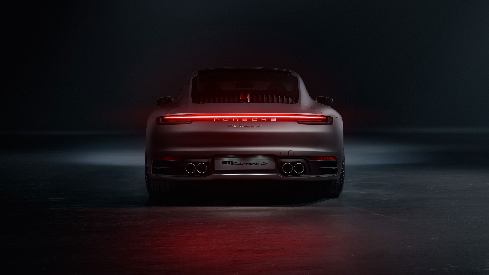
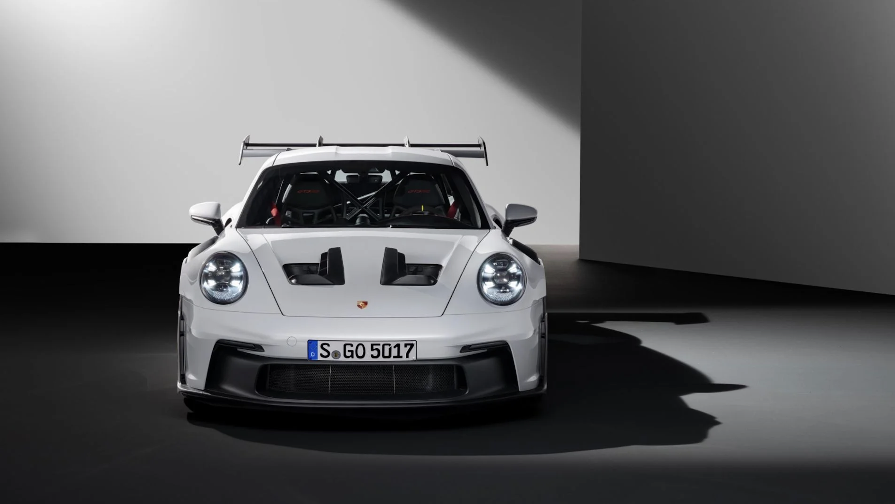
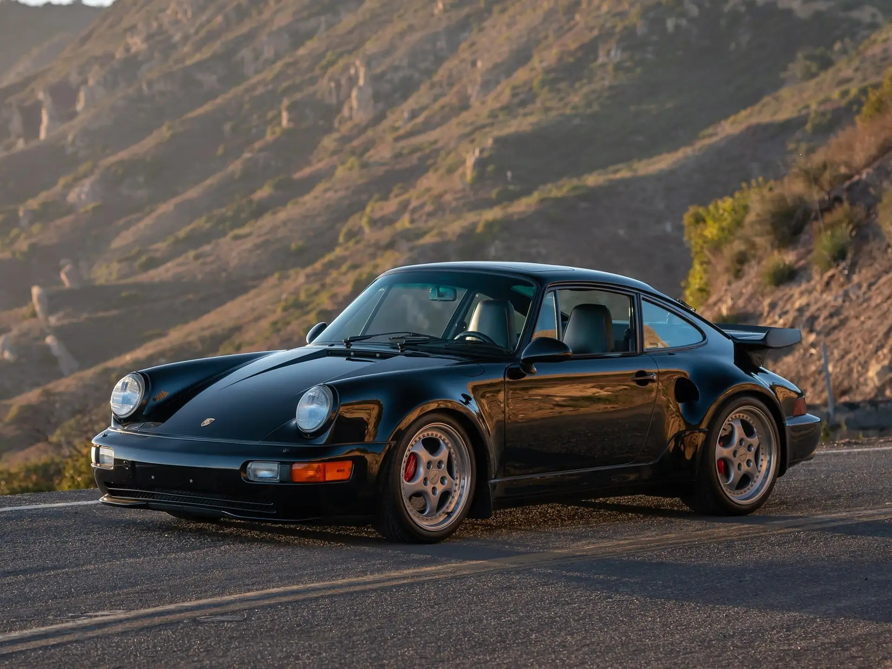

Model
911 GT3 S/C (Sport Cabriolet)
Year
2026
Top speed
194 mph
Engine
4.0L naturally aspirated flat-six, 502hp
Fun Fact
The first-ever production 911 GT3 convertible, manual with a naturally aspirated engine that revs to 9,000 rpm

911 GT3 S/C (Sport Cabriolet)
2026
194 mph
4.0L naturally aspirated flat-six, 502hp
The first-ever production 911 GT3 convertible, manual with a naturally aspirated engine that revs to 9,000 rpm

911 GT3 RS (997)
2006
193 mph
3.6L naturally aspirated flat-six, 415hp
Lightweight, no turbo, pure driving experience, many consider it the greatest 911 ever made

911 Carrera (993)
1994
168 mph
3.6L air-cooled flat-six, 272hp
The last air-cooled 911 ever made, widely considered the most beautiful and collectible 911 of all time

911 Turbo (930)
1975
155 mph
3.0L air-cooled turbocharged flat-six, 260hp
The original turbocharged 911, so brutal and unpredictable to drive it earned the nickname "The Widowmaker"